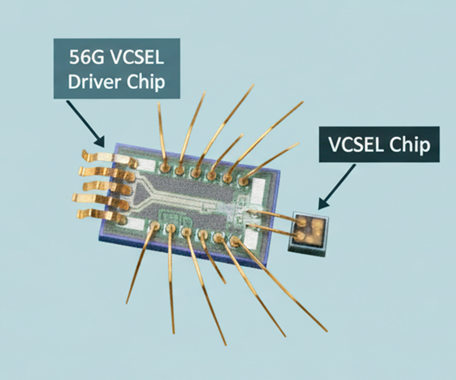
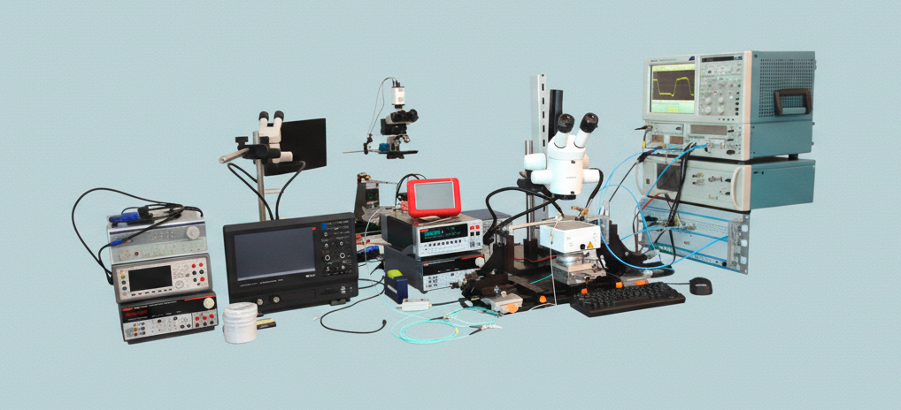
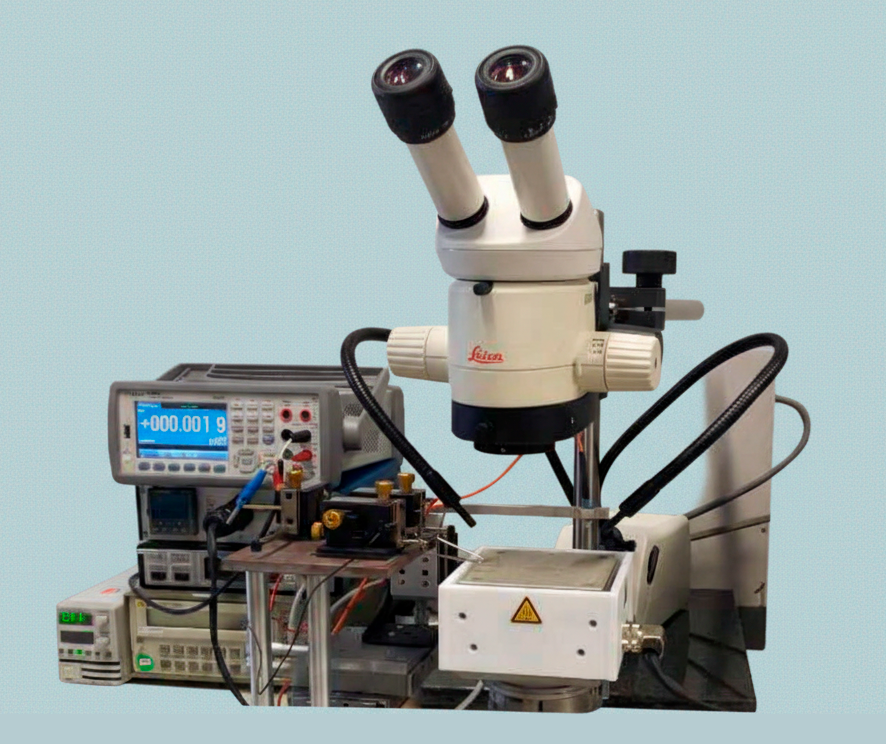
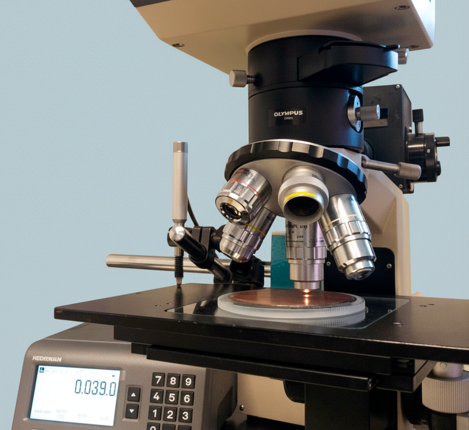
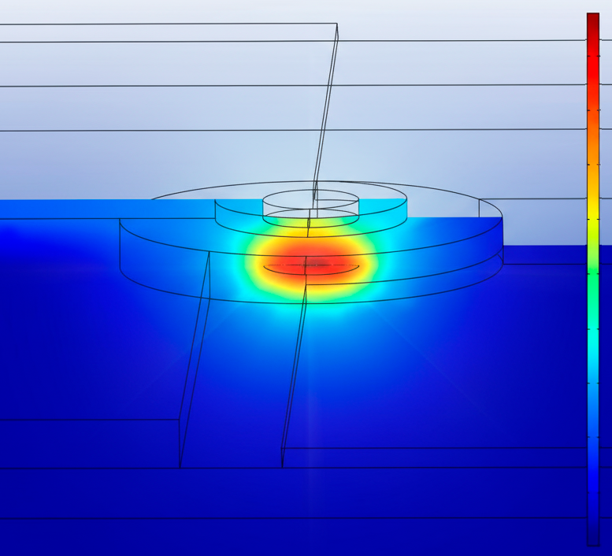

PRODUCT CATALOG
FIBER OPTICS & PHOTONICS
2026
SCOPE: Optoelectronic Components & Solutions
APPLICATIONS: Optical Communication, Consumer & Automotive
KEY TECH: VCSELs, PIN Photodiodes, SiGe BICMOS
SCOPE: Optoelectronic Components & Solutions
APPLICATIONS: Optical Communication, Consumer & Automotive
KEY TECH: VCSELs, PIN Photodiodes, SiGe BICMOS
VI SYSTEMS (VIS) DEVELOPS AND MANUFACTURES CUTTING-EDGE OPTOELECTRONIC COMPONENTS FOR COMMUNICATION, CONSUMER, AND AUTOMOTIVE APPLICATIONS. LOCATED IN THE HEART OF BERLIN, WE ARE A FABLESS COMPANY SPECIALIZING IN ULTRA-FAST SOLUTIONS FOR OPTICAL INTERCONNECTS AND SENSORS.
OUR PORTFOLIO INCLUDES VERTICAL CAVITY SURFACE-EMITTING LASERS (VCSELS) UP TO 246 Gb/s AND PIN PHOTODIODES UP TO 400Gb/s PER CHANNEL, ALONGSIDE DRIVER AND AMPLIFIER ICS OPERATING UP TO 80Gbaud. OUR COMPONENTS ENABLE ENERGY-EFFICIENT 400 Gb/s PAM-4 TRANSMISSION PER 4 WAVELENGTH CHANNELS USING SHORT WAVE DIVISION MULTIPLEXING (SWDM) OVER 300m OF MULTIMODE FIBER. 100Gb/s SINGLE MODE FIBER DATA TRANSMISSION OVER KM-LONG DISTANCES IS POSSIBLE.
VIS CUSTOMIZES STATE-OF-THE-ART SIGE BICMOS INTEGRATED CIRCUITS TO MATCH ULTRAHIGH-SPEED VCSEL TRANSMITTER AND PIN RECEIVER COMPONENTS.
BOTH KEY ELEMENTS ARE ASSEMBLED IN A PROPRIETARY HIGH-FREQUENCY DESIGN DELIVERING OUTSTANDING PERFORMANCE OVER A WIDE TEMPERATURE RANGE.
OUR UNIQUE SELLING POINT IS THE COMBINATION OF MICRO-ASSEMBLY INTEGRATION OF ADVANCED ELECTRO-OPTIC COMPONENTS, DEVELOPMENT OF HIGH-SPEED ICS AND MODULATION APPROACHES.
VIS OPERATES A FABLESS MODEL ENSURING RELIABILITY AND SCALABILITY.

VIS'S SEMI-AUTOMATIC PROBER STATION PERFORMS HIGH-SPEED ELECTRICAL AND OPTICAL TESTING EARLY IN THE MANUFACTURING PROCESS, REDUCING COSTS BY ELIMINATING OUT-OF-SPEC WAFERS.
FULL WAFER CHARACTERISATION: 100% CHARACTERISATION OF 2″–8″ WAFERS USING AN ALIGNMENT CAMERA WITH PATTERN RECOGNITION; AUTOMATIC ALIGNMENT TO CHIPS; TEMPERATURE RANGE 25°C–150°C.
EMISSION ANALYSIS: NEARFIELD AND FARFIELD ANALYSIS FOR EMITTING DIAMETER, MODE CHARACTERISTICS, POLARIZATION AND ANGULAR POWER DISTRIBUTION.
THE HIGH-FREQUENCY LAB ANALYSES ELECTRO-OPTICAL PERFORMANCE USING A SINE-WAVE GENERATOR UP TO 38 GHz WITH A 70 GHz SAMPLING OSCILLOSCOPE.

THE LABORATORY'S OPTICAL MICROSCOPES UP TO 1000× MAGNIFICATION AND THICKNESS ANALYSIS TECHNOLOGY RESOLVING 0.1 μm (HORIZONTAL) AND 0.5 μm (VERTICAL).
MICROPROBER STATION: ON-WAFER CHARACTERISATION OVER A WIDE TEMPERATURE RANGE; STATIC TESTS MEASURE FORWARD/REVERSE VOLTAGE, CURRENT AND DIFFERENTIAL RESISTANCE.
ADVANCED STUDIES: COMPLEX ANALYSES USE FIB, SEM AND TEM WITH EXTERNAL PARTNERS.


THERMAL MODELLING OF SEMICONDUCTOR PACKAGES USES MODERN FEA/CFD TOOLS INTEGRATED WITH MECHANICAL CAD.
VCSEL SIMULATION: MODELLING OF VCSEL OPTICAL MODES (FUNDAMENTAL AND EXCITED MODES) AND THERMAL DISTRIBUTIONS, WHICH INFORM DESIGN IMPROVEMENTS.

VIS VCSEL chips cover short-wavelength datacom, sensing, LiFi, and AI interconnect work with high modulation bandwidth, compact chip formats, and qualified or sample-ready variants from 840 to 960 nm.
Datacom VCSELs for 50G/56G, 100G/112G, and 200G-class PAM-4 or NRZ links, including multi-mode and multi-aperture single-mode variants.
VIS VCSEL chips cover short-wavelength datacom, sensing, LiFi, and AI interconnect work with high modulation bandwidth, compact chip formats, and qualified or sample-ready variants from 840 to 960 nm.
High-temperature, high-power, and multi-aperture VCSELs for sensing, LiFi, beam switching, steering, and optical AI test setups. Individually addressable coupled-aperture variants are available on demand.
Continuation of the VCSEL sensing portfolio, including single-aperture VM100 variants, S-series devices, and qSM chips for 200G-class PAM-4 experiments.
VIS high-speed photodiodes combine broad 400 to 1650 nm sensitivity with strong responsivity and very high bandwidth for SWDM receivers, broadband measurements, and custom coating requirements.
PD versions are optimized for SWDM operation in 840-960 nm, while covering a broader 400-1600 nm range.
D85 SWDMC1 extends the PD portfolio with up to 200 Gbaud per channel and about 85 GHz bandwidth for SWDM links. Highest-speed PD option in the catalog, intended for 400G-class receiver experiments and compact high-bandwidth optical links.
Fiber-coupled VIS modules package photodetector and VCSEL transmitter technology into ready test assemblies, reducing setup time for high-speed optical link validation.
Fiber-coupled PIN photodetector modules for high-speed optical input paths.
VCSEL transmitter modules and transmitter subassemblies for 850 nm, SWDM, and 1550 nm test links.
VIS driver and TIA ICs complete the high-speed optical link around VCSELs and photodiodes, with compact low-power designs and evaluation boards for transmitter and receiver prototypes.
VCSEL driver ICs for high-speed optical transmitters, with supply and power values shown for quick comparison.
Transimpedance amplifier ICs for receiver-side signal conversion in high-speed optical links. Evaluation boards expose the installed VIS driver and receiver-side ICs in fiber-coupled Tx/Rx test setups.
VIS optical assemblies package high-speed receiver and transmitter functionality into ready Tx/Rx devices for optical link validation and product-development labs.
Single-channel optical Tx/Rx assemblies for 56G NRZ link validation.
FOR ADDITIONAL INFORMATION OR TO RECEIVE A QUOTATION, PLEASE CONTACT OUR SALES DEPARTMENT.